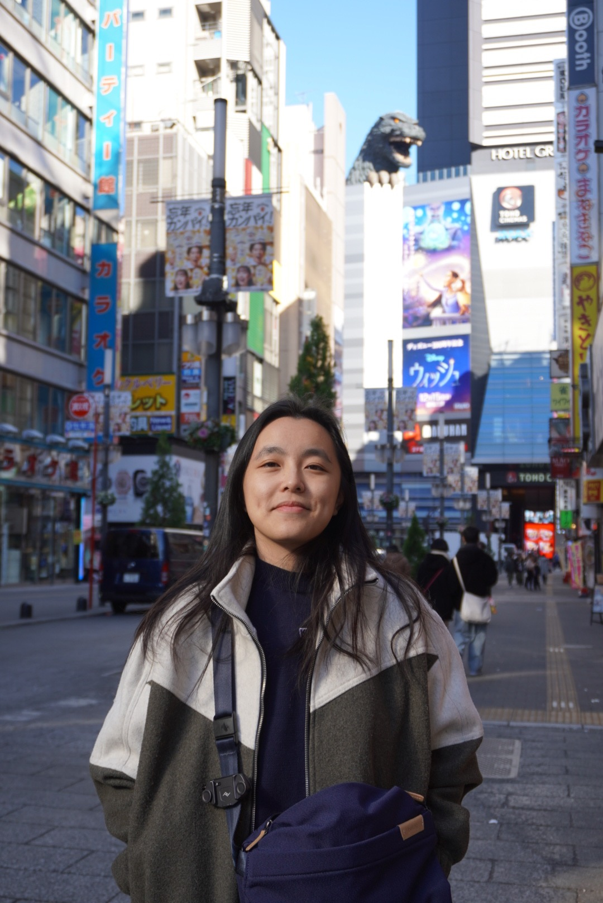

04 · about this place
I’m Bethany.
This is my index.
A personal website for documenting the things I’m into, the things I’m learning, and whatever deserves a permanent home outside of a social feed.

the short version
A more personal “about” is coming next.
We’ll use this space for your story, what you do, where your interests came from, and anything else you want visitors to know.
For now, explore the garage, closet, and fantasy pages—or come back as the collection grows.
back to the index ↗